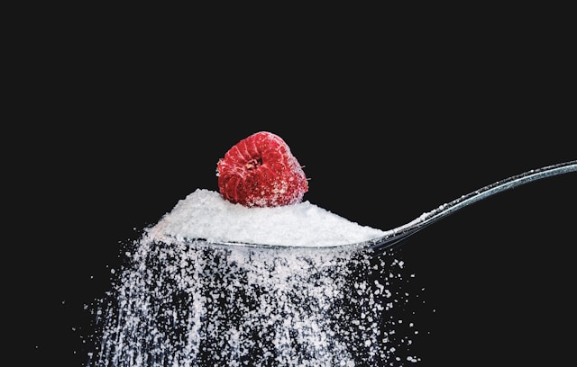

| 500 ml krema |
 |
500 ml kremayı bir tencerede ısıtın ve 1 çay kaşığı vanilya özünü ekleyin. |
| 5 adet yumurta sarısı |
 |
5 adet yumurta sarısını ve 100 g şekeri bir kapta çırpın. |
| 100 g şeker |
 |
Isınmış kremayı yumurta karışımına ekleyin, karıştırın ve süzün. |
| 1 çay kaşığı vanilya özü |
 |
Karışımı küçük kaplara dökün ve fırın tepsisine yerleştirin. |
| Şeker (karamelize etmek için) |
|
Kapların üzerine sıcak su dökün ve önceden ısıtılmış 150°C fırında 45-50 dakika pişirin. |
| Son Adım |
Soğuyunca üzerine şeker serpin ve mutfak feneri ile karamelize edin. |